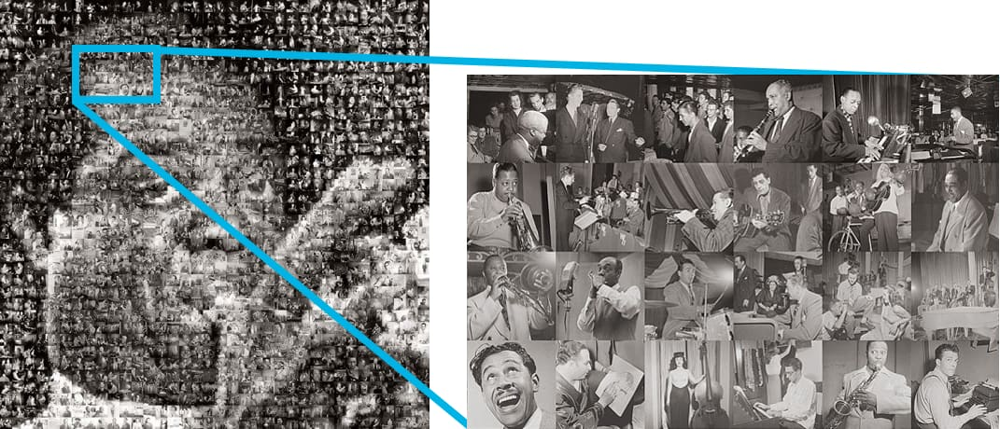
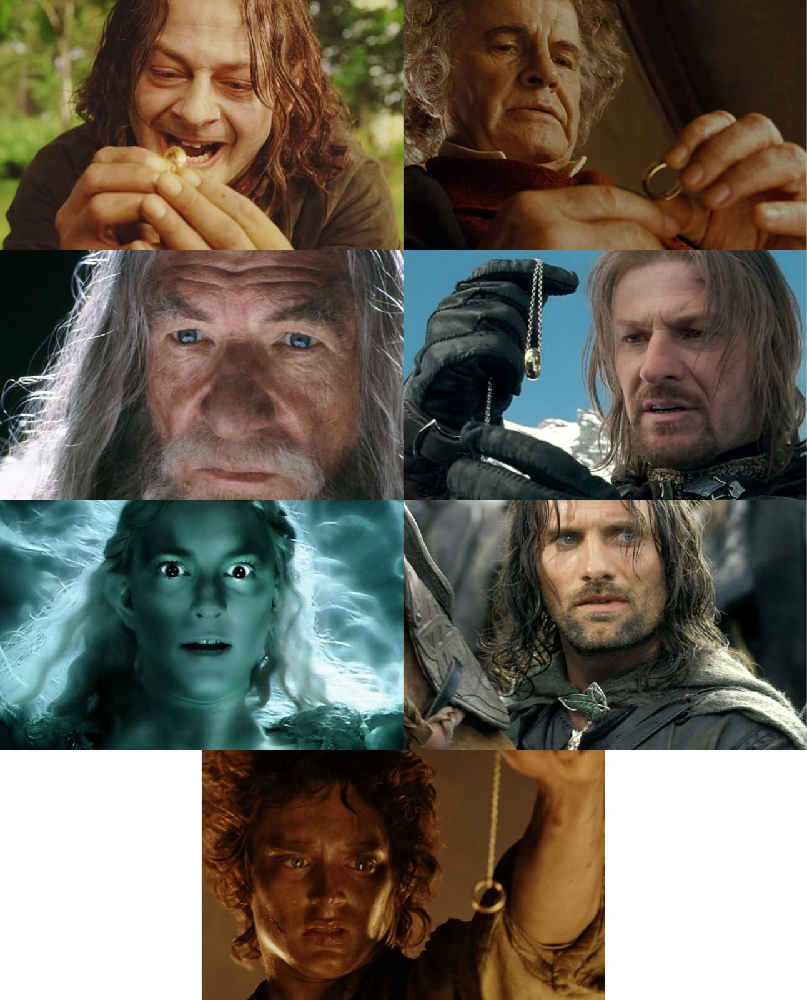
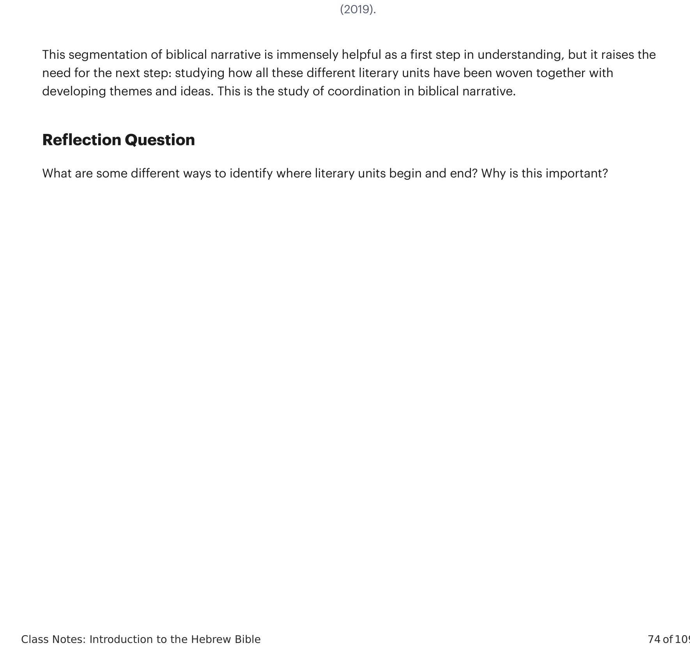

Diretores de cinema frequentemente criam uma unidade coesa com os temas e a linha de enredo de uma história através da repetição e variação. Ao construir expectativas no espectador através da repetição, o diretor pode introduzir variação e surpresa.Movie directors often create a cohesive unity with the themes and plotline of a story by repetition and variation. By building up viewer expectations through repetition, the director can introduce variation and surprise.
Na trilogia cinematográfica O Senhor dos Anéis, considere o motivo da cena da “tentação do anel”. Alguns personagens são tentados pelo anel...In The Lord of the Rings film trilogy, consider the motif of the “ring temptation” scene. Some characters are tempted by the ring...

Se imaginarmos as imagens individuais em uma fotomosaico ou as menores peças de uma colcha, então segmentação significa prestar atenção aos limites da menor unidade literária. Os autores bíblicos têm uma ampla variedade de técnicas para indicar a abertura e o fechamento de uma unidade literária.If we imagine the individual images in a photomosaic or the smallest pieces of a quilt, then segmentation means paying attention to the boundaries of the smallest literary unit. The biblical authors have a wide variety of techniques to indicate the opening and closing of a literary unit.
A próxima sessão explorará a coordenação, a estratégia de identificar palavras e temas repetidos.The next session will explore coordination, the strategy of identifying repeated words and themes.
| Verso | Unidade | Parte | Movimento |
| 2:24-25 | Dois humanos se casam | ||
| 3:1-5 | Diálogo entre a serpente e a mulher | 3:1-13 Loucura e a Queda | |
| 3:6-7 | A mulher e o homem comem da árvore | ||
| 3:8-13 | Diálogo entre Deus e os humanos | ||
| 3:14-15 | Maldição sobre a serpente | 3:14-24 A Consequência e o Exílio do Éden | |
| 3:16 | Consequências para a mulher | ||
| 3:17-19 | Consequências para o homem | ||
| 3:20-21 | Provisão de vestes | ||
| 3:22-24 | Humano... |

Esta segmentação da narrativa bíblica é imensamente útil como um primeiro passo na compreensão, mas levanta a necessidade do próximo passo: estudar como todas essas diferentes unidades literárias foram tecidas juntas com temas e ideias em desenvolvimento. Este é o estudo da coordenação.This segmentation of biblical narrative is immensely helpful as a first step in understanding, but it raises the need for the next step: studying how all these different literary units have been woven together with developing themes and ideas. This is the study of coordination.